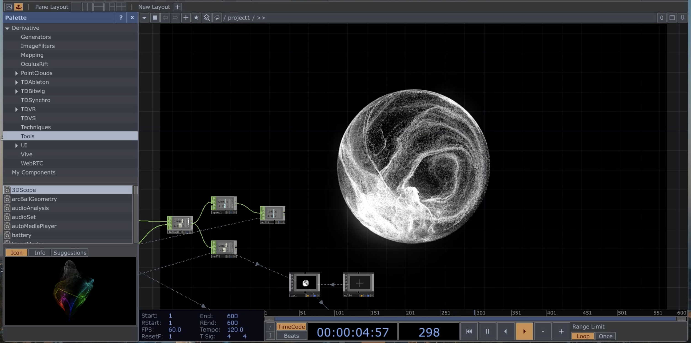
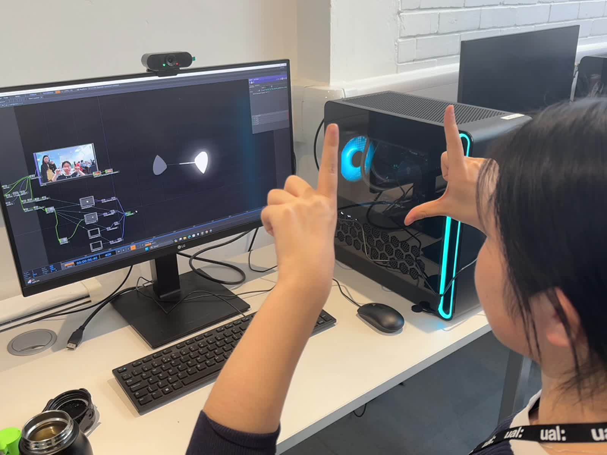
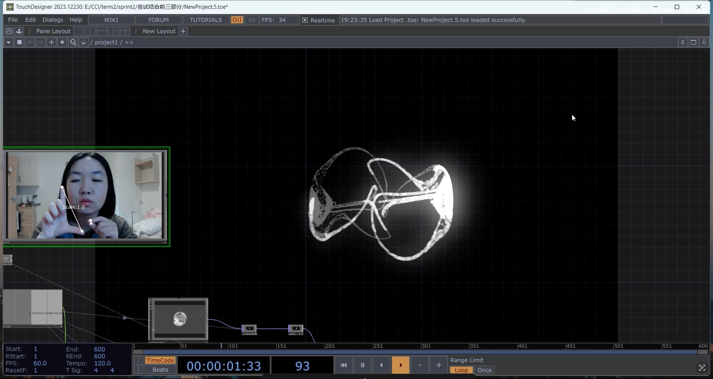
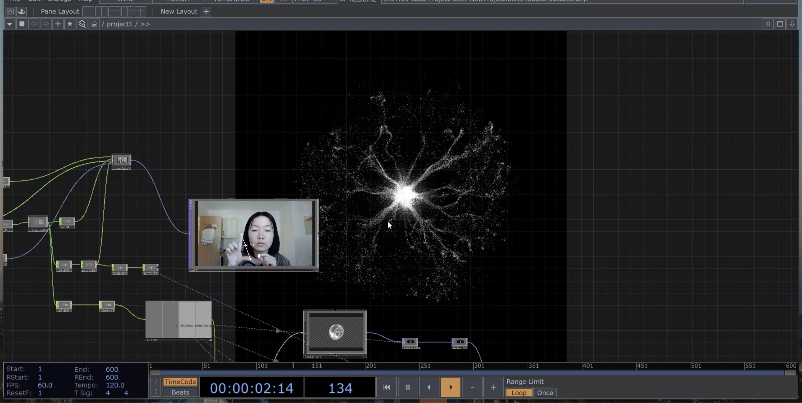
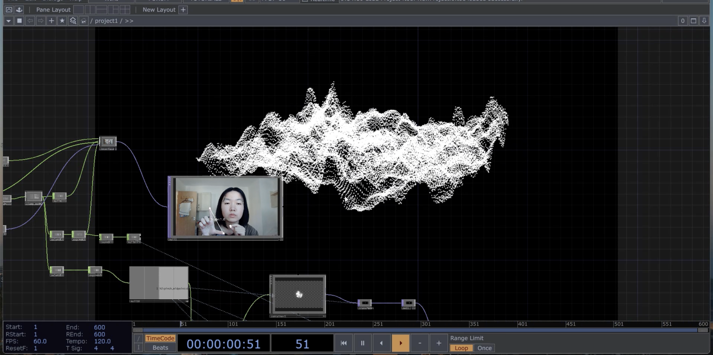
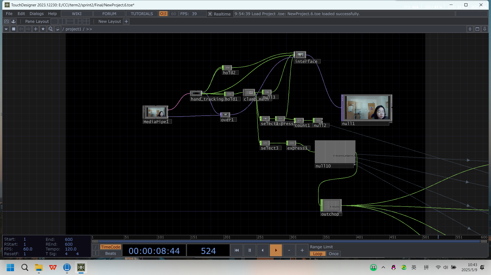
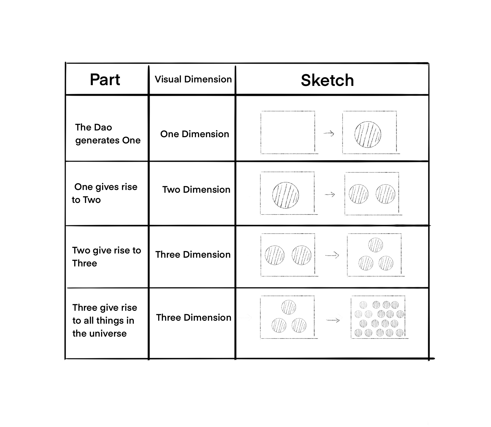

01
道生一
Dao gives rise to One
A compact particle sphere establishes an initial centre: a singular state containing the possibility of further change.
Generative Visualisation · Embodied Input
A gesture-controlled experiment that interprets a Daoist sequence of emergence as a continuously transforming field of particles, forms, and spatial relationships.

01 · Conceptual Premise
道生一
一生二
二生三
三生万物
Adapted from the Tao Te Ching, Chapter 42
The project begins with the sequence “Dao gives rise to One; One gives rise to Two; Two gives rise to Three; Three gives rise to the ten thousand things.” Rather than treating it as a fixed diagram, the work translates it into a rule for change over time.
A single point-cloud body divides, forms relationships, and expands into a more complex field. Gesture does not select an image from a menu; it modulates the pace and scale of an ongoing transformation.
The visualisation is an artistic interpretation of a philosophical proposition, not a literal representation of Daoist cosmology.
02 · Generative Sequence
Four visual states form a continuous cycle. Each stage increases the number of relationships in the system while preserving the same luminous particle language.

道生一
A compact particle sphere establishes an initial centre: a singular state containing the possibility of further change.

一生二
The centre differentiates into paired and interdependent paths. Separation is visualised as a relationship rather than a break.

二生三
A third relation opens the form outward. Branching motion turns duality into a generative structure capable of recombination.

三生万物
The structure disperses into a dense and shifting terrain. The final state is not an ending but the most complex phase of the cycle.
03 · Interaction System
The distance between the participant’s thumb and index finger is interpreted as a live control value. This embodied measure changes the scale, movement, and pacing of the visual transition.

A webcam supplies the live image of the participant’s hands.
MediaPipe locates hand landmarks and measures their changing relation.
The pinch-distance value is remapped to visual scale and transition speed.
TouchDesigner continually renders the corresponding particle state.
04 · Development
Development moved between conceptual diagrams, hand-tracking tests, and real-time point-cloud experiments.

Landmark tracking converts a changing hand pose into numeric coordinates and distance values without a handheld controller.
A node-based visual network maps those values across point-cloud deformation, spatial scale, feedback, and the timing of each state.
05 · Interaction Film
The participant changes the distance between both hands and between finger landmarks. The visual body responds by contracting, dividing, branching, and dispersing.
A participant uses hand gestures to move between the four generative stages in real time.
A short atmospheric sound layer accompanies the visual rhythm without prescribing a fixed narrative.
06 · Reflection
The work treats interaction as participation in a process rather than command over a finished image. The participant influences the rhythm of change, while the generative system retains its own visual behaviour.
A future iteration could move the output from a desktop monitor to a large projection and refine the transition thresholds so that the four states feel less like separate scenes and more like one continuous ecology.